February 2023 to August 2023 · Internship · Verneuil-en-Halatte, France
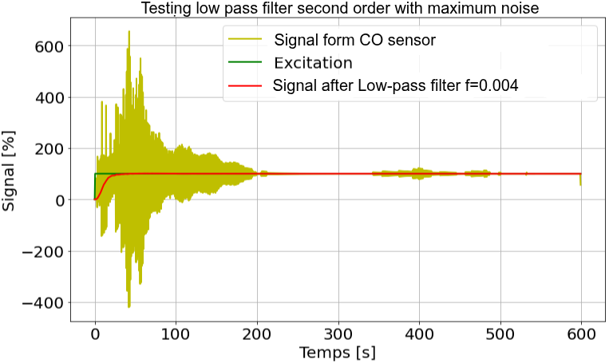
Signal before and after the digital filter on the same graph.
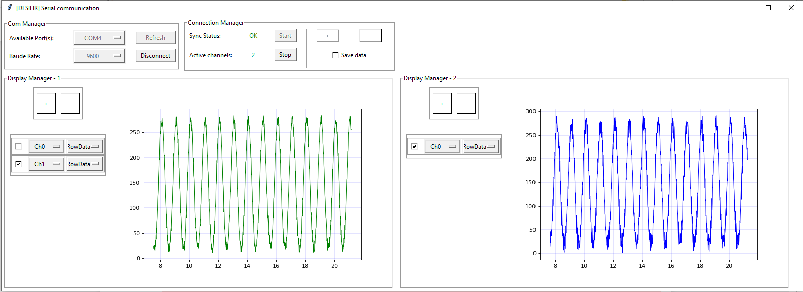
Desktop software used to test the CO sensors in the lab.
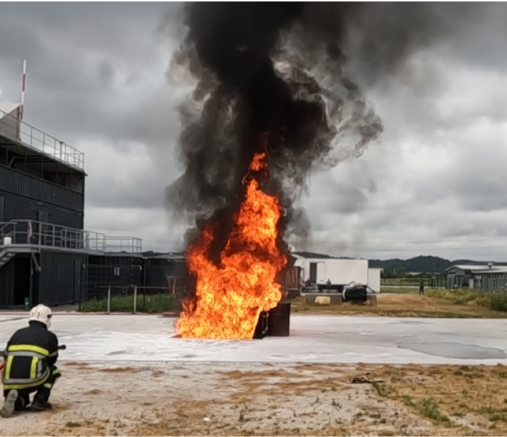
Raw fire image used as input.
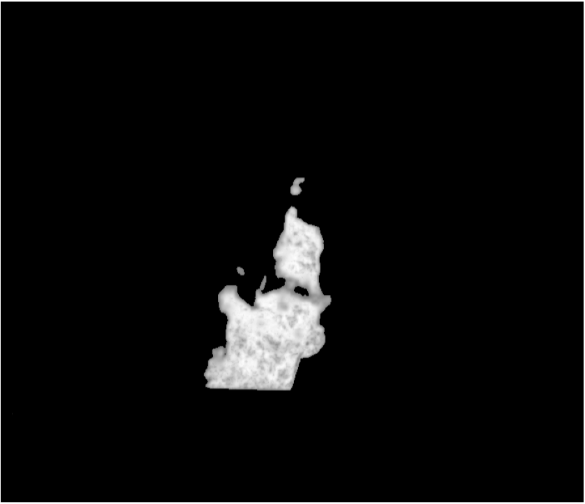
Segmentation output from the paper's neural network.
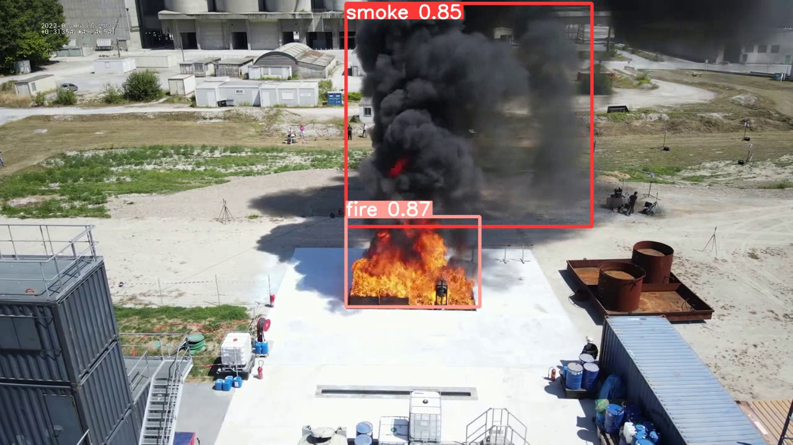
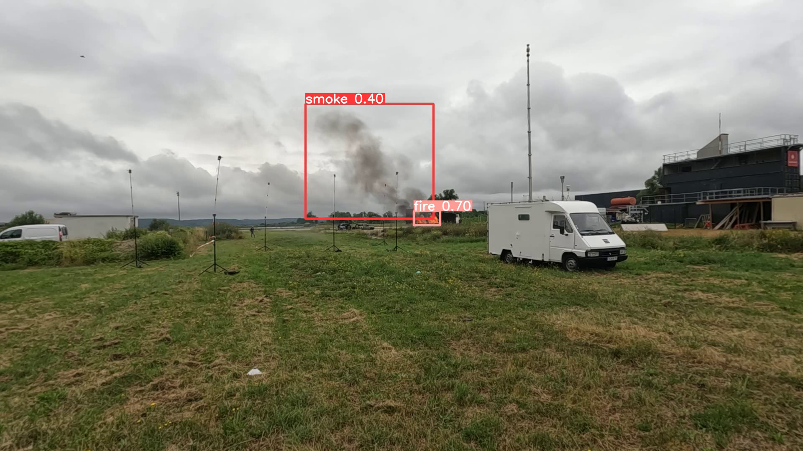
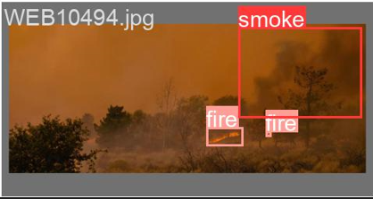
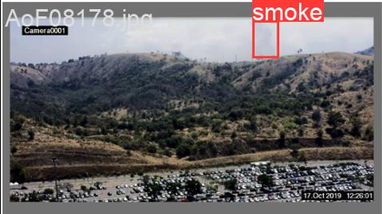
YOLOv5 detections: fire and smoke under various conditions.
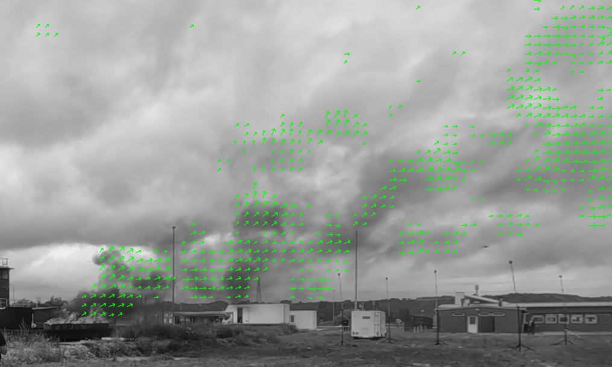
Optical flow velocity vectors overlaid on smoke footage.
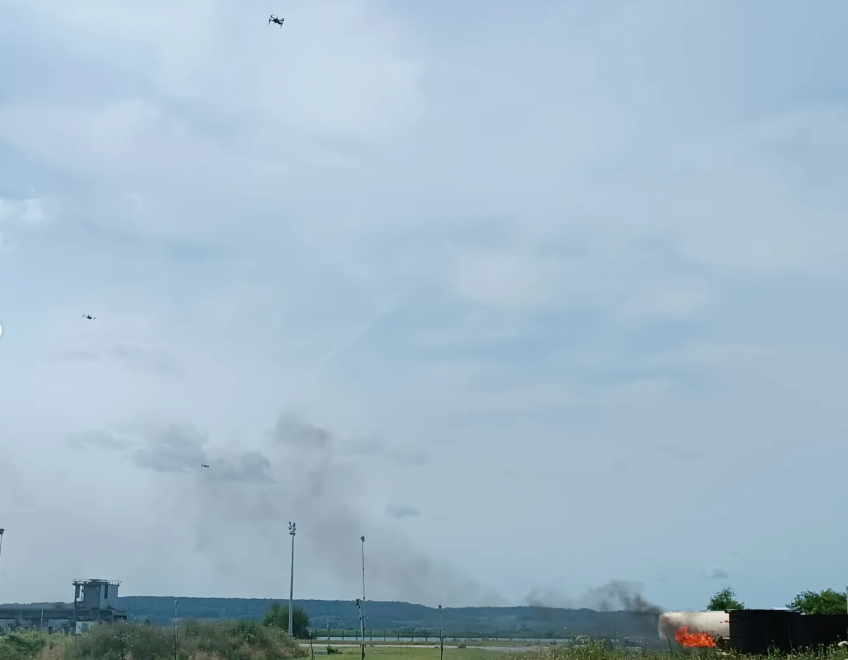
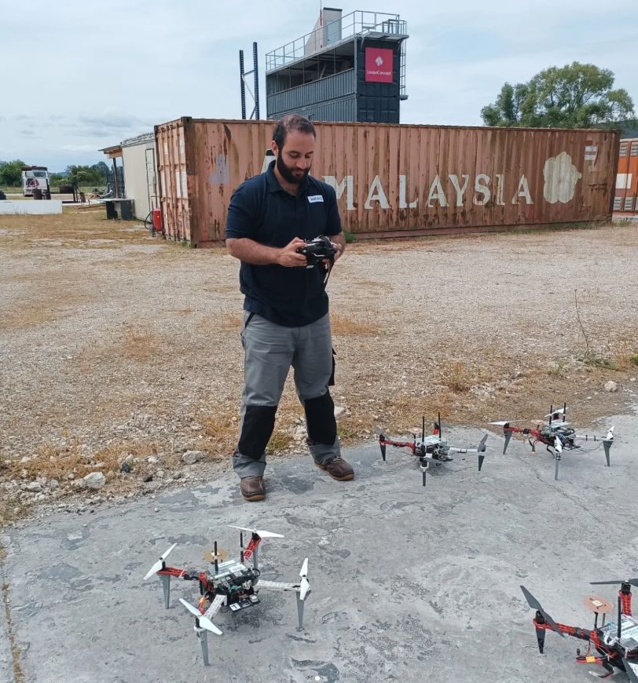
At the test site with the drone fleet — Le Havre, 2023.
Tech Stack
© 2026 Chris KY - Built with Passion